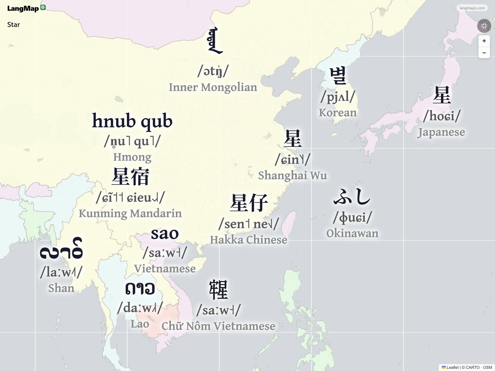

Seven Characters, Seven Days: 月火水木金土日
- Japanese and Korean use the same seven characters for the days of the week: 月火水木金土日.
- The seven-day planetary week came to East Asia from the west, but China gave the five planets their familiar 五行 names.
- Japan and Korea kept those old names, while modern China and Vietnam chose different systems.

Contents
The same seven characters
The Korean week runs:
월 화 수 목 금 토 일
Written in Hanja:
月 火 水 木 金 土 日
These are exactly the same characters used in Japanese:
月曜日 (getsuyōbi)
火曜日 (kayōbi)
水曜日 (suiyōbi)
木曜日 (mokuyōbi)
金曜日 (kin'yōbi)
土曜日 (doyōbi)
日曜日 (nichiyōbi)
Korean simply reads the same names in Korean:
月曜日 (woryoil)
火曜日 (hwayoil)
水曜日 (suyoil)
木曜日 (mogyoil)
金曜日 (geumyoil)
土曜日 (toyoil)
日曜日 (iryoil)
Even Korean 요일 (yoil) is 曜日.
So why 月火水木金土日?
The Seven Luminaries, 七曜
They come from the Seven Luminaries, 七曜.
The seven are:
日, the Sun
月, the Moon
火, Mars
水, Mercury
木, Jupiter
金, Venus
土, Saturn
The five planets were matched in China with the Five Elements, 五行:
火星, Mars
水星, Mercury
木星, Jupiter
金星, Venus
土星, Saturn
So 火曜日 does not literally mean "Fire Day."
It means the day of Mars, 火星.
A week that travelled east
The seven-day planetary week itself was not originally Chinese.
Its deeper roots lie in ancient West Asian and Hellenistic astronomy and astrology. The system travelled east through India and Central Asia and became well known in China, especially during the Tang dynasty.
Buddhist astronomical texts such as the 《宿曜經》 described the 七曜 and the seven-day cycle.
From China, the system spread further through East Asia.
Japan knew the 七曜 system by the Heian period.
It appeared in calendars and astrology, although people were not yet living by a modern Monday-to-Sunday workweek.
So there is no contradiction between "Tang China" and "Heian Japan." The two periods overlapped, and Japan was actively importing books, Buddhism, astronomy and calendrical knowledge from Tang China.
Korea also knew the 七曜 as part of astronomy and calendrical science.
But premodern Korea did not normally organize everyday life by Monday, Tuesday, Wednesday and so on.
Dates were more commonly understood through the lunar calendar and the sixty-day cycle of the Heavenly Stems and Earthly Branches, 干支.
A day might be identified as:
甲子
乙丑
丙寅
rather than by a weekday.
The familiar 월요일, 화요일, 수요일 system entered public everyday life much later, especially with the calendar reforms of the late nineteenth century.
China and Vietnam chose differently
China itself eventually moved away from the old 七曜 names in ordinary speech.
Modern Mandarin usually says:
星期一
星期二
星期三
星期四
星期五
星期六
星期日 / 星期天
So the old planetary names that once circulated in China are now more visible in everyday Japanese and Korean.
Vietnam took yet another route.
Modern Vietnamese says:
Sunday: chủ nhật (主日)
Monday: thứ hai (次𠄩)
Tuesday: thứ ba (次𠀧)
Wednesday: thứ tư (次四)
Thursday: thứ năm (次𠄼)
Friday: thứ sáu (次𦒹)
Saturday: thứ bảy (次𦉱)
The forms in parentheses are historical Hán-Nôm spellings.
Vietnamese numbers the days beginning after Sunday:
thứ hai, "second"
thứ ba, "third"
thứ tư, "fourth"
and so on.
This system developed under Christian missionary influence, especially the Portuguese Catholic tradition, rather than from modern Chinese 星期一, 星期二.
Vietnamese scholars certainly knew the Chinese 七曜 tradition through astronomy and classical learning, but the planetary names never became the normal everyday Vietnamese weekday names.
Three solutions to one week
So East Asia ended up with three different solutions:
| Days | System | |
|---|---|---|
| Japan | 月火水木金土日 | kept the old 七曜 names |
| Korea | 월화수목금토일 | kept the same 七曜 characters, read in Korean |
| China | 星期一二三四五六日 | mostly replaced them with numbers |
| Vietnam | chủ nhật, thứ hai, thứ ba… | developed a different Sunday-first numbering system |
The interesting part is that the system itself came from the west, the planet names were reshaped through Chinese 五行, and the old 七曜 names are now heard most clearly every week in Japanese and Korean.
One calendar system.
Several civilizations layered on top of it.